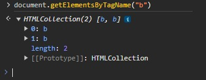
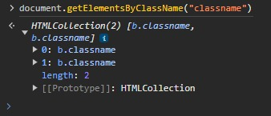
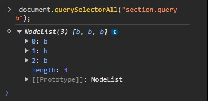

Ele nos permite obter elementos HTML a partir do nome da tag. Portanto,
você deve passar o nome da tag como parâmetro (no formato string). Caso
não seja encontrado nenhum elemento com o tag name especificado, o retorno
da função será um HTMLCollection (um array de elementos HTML) vazio.
getElementsByTagName getElementsByTagNameTwo

2. document.getElementsByClassName(nomeDaClasse):
O método getElementsByClassName é muito parecido com o anterior. A
diferença está no fato de que, nesse caso, estamos obtendo elementos pelo
nome da classe. Sendo assim, você deve passar o nome da classe que está
presente na tag como parâmetro (no formato string). Da mesma forma, caso
não seja encontrado nenhum elemento com o nome de classe especificado, o
retorno da função será um HTMLCollection (um array de elementos HTML)
vazio.
getElementsByClassName getElementsByClassName2

3. document.getElementById(id):
Este método recebe um id (como string) e retorna o elemento HTML que
contém o id especificado. Na nossa página de exemplo, poderíamos obter o
conteúdo da tag section fazendo document.getElementById('id'). Caso o id
passado como parâmetro não esteja presente no documento, a função irá
retornar null. Notou que esse método é no singular, ao invés do plural
(como eram os anteriores)? Isso se deve ao fato de que `id` deve ser único
em cada elemento HTML.
getelementbyid
4. document.getElementsByName(name):
Este método é bem similar aos métodos getElementsByTagName e
getElementsByClassName, que vimos anteriormente, porém, nesse caso, o
método deve receber o conteúdo da propriedade name da tag. Essa
propriedade é comumente utilizada em elementos de formulários HTML.
Observe que temos essa propriedade sendo utilizada no input da nossa
página de exemplo.
5. document.querySelector(seletor) e document.querySelectorAll(seletor):
O método querySelector é um dos mais utilizados quando se deseja obter um
elemento HTML específico da página. Nele devemos passar um seletor no
estilo CSS como parâmetro e, com isso, o elemento será buscado na página.
Essa é grande vantagem do querySelector: com ele podemos ser mais
específicos na busca por elementos HTML.
Um ponto importante é que, por ter a proposta de ser bem específico, esse
método retorna apenas o primeiro elemento HTML que se enquadre no seletor
especificado. Caso tenha interesse de obter vários elementos, utilize o
método querySelectorAll.
OBS.: Uma importante vantagem do querySelectorAll é o fato de que ele
retorna um NodeList, que nos permite iterar sobre os seus elementos
utilizando um forEach. O mesmo não é válido para o HTMLCollection.
querySelectorquerySelectorquerySelector
`[attribute='value']`: Este seletor permite selecionar elementos que
tenham um determinado atributo com um valor específico. Você substitui
'attribute' pelo nome do atributo que deseja verificar e 'value' pelo
valor que esse atributo deve ter para que o elemento seja selecionado.

Selecionar todos os "b" dentro de uma "section" com uma classe específica
usando "section.classname b".